Introduction
Linear regression, as its name implies, tests for a straight-line relationship between two numeric variables. There are a few main reasons for doing a regression analysis:
- Hypothesis testing - a researcher want to test for a cause and effect relationship between two numeric variables
- Explanation - the extent to which observed values in one variable can be explained by measurements of another
- Prediction - the line that is fitted to one set of data can be used to as a predictive equation for new observations
These are not mutually exclusive, and a single regression analysis allows one to do all three.
Consider this example of data that are typically analyzed using regression analysis. The graph to the left shows the kind of data that you collect when you want to use a spectrophotometer to measure concentration of a product (such as protein) in a solution. The spectorphotometer is an instrument that measures the amount of light absorbed as it passes through a sample (i.e. its absorbance). The amount of light absorbed is related to the concentration of product in the sample. However, the amount of light that is absorbed by a given concentration of a particular protein may not be known, so rather than using a standard formula for calculating concentration from absorbance it's necessary to calibrate the instrument to your particular samples by developing a standard curve.
The basic approach is to start with samples of known concentration, and measure the absorbance for these known standards. To account for random variation in the samples we might do several replicates at each concentration - 5 per concentration are shown here. We can then find a line that fits well to the data. If you recall, the formula for a straight line is y = mx + b, where m is the slope of the line (the change in absorbance per unit of change in protein, rise over run), and b is the y-intercept (where the line intersects with the y-axis when x is at 0).
Once we know the equation for the line, we can measure absorbance from samples of unknown concentration, and then plug their absorbances into the equation to calculate concentration.
Simple linear regression finds the best fit line for a set of two numeric variables, which can be used for predictive purposes. It can be used to measure the amount of variation in one variable that is explained by the other, and it can be used to test for relationships between two variables.
Simple linear regression
What makes the linear regressions we do in this class simple is that we will only use one response variable and one predictor (for more complicated analyses you'll need to take Biol 531 or Biol 532).
We are using a scatter plot to represent the absorbance/concentration relationship, and both of the variables are numeric - these are two characteristics that regression shares with correlation analysis. However, the apparent similarity between regression and correlation is superficial - regression is designed for testing cause and effect relationships, but correlation analysis measures associations between variables with no assumption that one variable causes a change in the other.
Regression actually has a greater similarity to ANOVA than it does to correlation analysis, because both regression and ANOVA are used to measure changes in a response variable (e.g. absorbance) that are attributable to changes in a predictor (concentration). The predictor in an ANOVA is a categorical variable of treatment groups, and the response is the quantitative variable recorded as a measure of response to treatment. In fact, it is possible to express an ANOVA as a type of regression analysis, and both linear regression and ANOVA are considered special cases of the same general linear model. Together ANOVA and regression are the most common linear models in use in the biological sciences.
Regression is appropriate for testing for cause and effect relationships, because only the response variable is considered to be subject to random variation. The predictor variable is treated as though it's experimentally set, without any random variation. In the spectrophotometer example, concentration is set to known values by the researcher, and the absorbance is measured as a response.
The two variables used in a regression, then, are:
-
The independent variable is the variable that is hypothesized to cause an effect. If an experimental manipulation is done, the variable that is manipulated is the independent variable). It is sometimes called the predictor variable, since we expect that we can calculate an expected response based on the value of the predictor variable. Even if it the predictor variable isn't experimentally set, regression still treats it as though its value is known, and is not subject to random variation. (Which variable is the independent in the absorbance/concentration example? Click here to see if you're right.)
-
The dependent variable (also known as the response variable) measures how the experimental subjects change in response to a change in the independent, or predictor, variable. Since responses to treatment are subject to individual, random variation, regression treats response variables as being subject to random variation. (And, which variable is the dependent? Kind of obvious now, but Click here to see if you're right.)
The equation for a straight line, you may remember from your math classes, is:
y = mx + b
where m is the slope and b is the y-intercept. Equivalently, a regression equation can be expressed as:
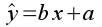
where y is the response variable, and x is the predictor variable. In the regression equation y is given a hat (^) to indicate that it is a predicted value. What is being predicted is the average of the y variable expected at a given value of x.
We interpret the parameters in a regression as indicating:
- Slope is the relationship between the predictor and response. It is the change in the response variable expected per unit of change in the predictor - it is the rise over the run. Slopes have units equal to the y-units divided by the x-units.
- Intercept is the predicted value of y when x is equal to 0. The intercept is needed to position the line in the right place, but it is not uncommon for 0 on the x variable to be well outside of the range of values in the data set. Interpreting a predicted value that is well outside of the observed range of the data is not a good idea, and the intercept is usually not interpreted as a result.
The concept of a best fit line
Set slope: Set intercept:
Regression equation:
Absorbance = 0 * Concentration + 0.3
Show the best fit line:
The graph to the left allows you to try your hand at finding a best fit line for the data. The data values are black dots, with red vertical lines connecting each of them to the regression line.
Initially, the regression line is set to have a slope of 0, and an intercept of 0.3. With a slope of 0, any value of concentration you plug into the equation will give you a 0 for the bx term, so the predicted ŷ will always be equal to the intercept value of 0.3 no matter what the value of x is. This is why you have a flat line that intersects with the y-axis at 0.3.
If you change the intercept you just change the amount that is added to the bx term, which shifts the line up and down along the y-axis.
If you change the slope, you change how much change in y there will be per unit change in x (remember, the slope is rise/run), which will cause the line to tilt more (if you increase the slope) or less (if you decrease it).
The two parameters work together to position the line, so you will need to change both to get the line to go through the data.
As you are trying out various combinations of slope and intercept, notice that some of the combinations you pick are clearly really bad - the line might miss the data set entirely, or it might cut across it at an angle. A line that cuts through the data at an odd angle may come very close to a few of the data points, but will be far from most of them - in general, a line that is close to as many data points as possible is a better choice.
When you have a line that you are happy with, click the "Reveal" button to see what the mathematically best values are - the best-fit line will be added to the chart in magenta, and its regression equation will appear below the button.
The line you picked as the best fit presumably was pretty close to the line you got when you hit "Reveal", because you probably made it go through the middle of the data set, but the match was probably not perfect. How do we know that the best fit line is actually better than the one you chose?
The actual best fit line is considered best for a specific reason - it is the least squares line. The least squares line is the one that minimizes the squared differences between the data points and the line. In this sense the least squares line is as close to all of the data, on average, as possible.
The vertical red lines in the graph connect each data point to its predicted value on the regression line. The difference between the observed values (yi) and the predicted values (ŷ) are called residuals.
| 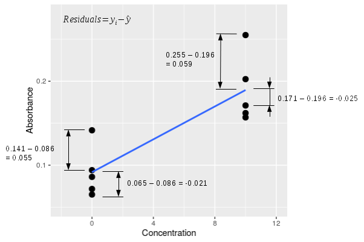
The graph to the left zooms in on the first two concentrations so that you can see the residuals better. A single residual is calculated as yi - ŷ, and there are four examples shown in the graph to the left. The raw residuals have a sign - for the two data points above the line their yi - ŷ residual is positive, and for the two data points below the line yi - ŷ is negative. If we calculate all of the residuals for all of the data points, square them, and add them up we would get the sums of squared deviations away from the line, otherwise known as the SSE ("residual" sums of squares according to MINITAB) for the regression line. It is this sum of squared residuals that the least squares line minimizes. |
Estimators for slope and intercept
The first version of the slope formula is the easier one to interpret:
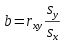The formula shows that the estimate of the slope (b) is equal to the correlation between the x and y variables (rxy) multiplied by the ratio of the standard deviations (sy and sx). You can think of the slope as doing two distinct jobs - it represents the strength of the relationship between the two variables, and it translates the units of the x-variable into units of the y-variable. This version of the formula shows those two different features clearly - the correlation coefficient is a measure of the relationship between the variables, and the ratio of the standard deviations takes care of scaling the predicted values to units of the y-variable.
Another formula for slope that you may encounter is:
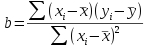This version of the formula is mathematically equivalent to the previous one. It is harder to understand, but is easier to calculate on a calculator.
The slope for the absorbance/concentration data is b = 0.0107, which tells us that for every 1 mg/ml increase in protein concentration there is an increase in absorbance of 0.0107 AU.
Once you have the slope estimate, you can calculate the intercept by plugging known values for x and y along with the slope estimate into the regression, and solving for the intercept. But what are known values for x and y?
The arithmetic mean is a least-squares estimator for the population mean - in other words, when you calculate a mean as x̄ = Σxi/n, the value x̄ makes the sum of squared differences around the mean (Σ(xi - x̄)2) as small as possible. Since the mean of x and the mean of y are both least squares values, they both must fall on the regression line. We can thus use the value x̄ and ȳ as known values so that we can calculate the intercept. Plugging in x̄, ȳ, and b into the regression equation:
ȳ = b x̄ + a
and solving for the intercept:
a = ȳ - b x̄
gives us the least-squares estimate of the intercept. Plugging in the values for our data, we get the intercept:
a = 0.3029 - 0.0107 (20) = 0.088
This tells us that the average absorbance expected when the concentration of protein is 0 mg/ml is 0.088 AU.
Testing the null hypothesis in a regression:
The slope is the parameter we base our interpretation on, and it's the parameter that defines the null hypothesis as well. If there is no relationship between the predictor and response variables, then a change in the predictor (x) will cause no change in the response (y), which means that the slope of the line, b, will equal zero (recall that a slope of 0 indicates a flat line). Because a slope of zero indicates no change in y when x is changed, and thus no effect of x on y, the null hypothesis in a regression analysis is often expressed in terms of this slope parameter, and is:
Ho: β = 0
HA: β ≠ 0
The null value for the intercept is the predicted value of y when the slope is equal to 0. Since the line has to go through the mean of y and the mean of x, a flat line running through the mean of y will intersect the y-axis at the mean of y. Thus, under the null hypothesis, the line that represents no relationship between x and y is flat, and intersects the y-axis at the mean of the y-data.
The graph to the left illustrates what the null hypothesis says about our data - there are still 5 measurements for each level of known concentration, because that is set experimentally and not subject to random chance. Under the null hypothesis, however, the amount of absorbance is independent of concentration, and at a population level the slope is equal to 0, a flat line. However, because absorbance is subject to chance variation, any random sample of data gives us a slope that is not exactly equal to the null value. We will be testing the null hypothesis by measuring how well the line explains the data, compared with the amount of random variation there is around the line.
The null hypothesis is expressed in terms of the slope, but we test the null hypothesis by constructing an ANOVA table based on the fitted line.
Constructing an ANOVA table for a regression analysis
Just like with an ANOVA, we will be partitioning the total variation in the data into a component that is due to the predictor, and a component that is due to individual random variation.
| 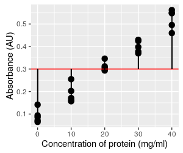
The total sums of squares is variation of the dependent variable around the "grand mean", which is no different in regression and ANOVA - it is simply the mean of the response variable, absorbance. The grand mean for the dependent is shown here as a red flat line, and if we calculated the deviations between each observation and this line (shown as vertical black lines), squared them and added them up, we would have an estimate of the total sums of squares, or SST. There's a problem with representing this graphically, by the way - there are five points at each concentration, but it looks like just one vertical line at each concentration instead of five. This is because all five points have the same x-axis value, and their lines are overlapping. Be aware that each point has its own difference from the grand mean. |
|
The residuals are the random, individual scatter around the line. The sum of the squared residuals gives us a measure of random variation that isn't explained by the relationship between absorbance and concentration. This is our SSE, just like in ANOVA, but since it is calculated from residuals it is sometimes called residual sums of squares. Just like with SST, there is a residual for every point, but they overlap for all of the points at the same concentration. |
| 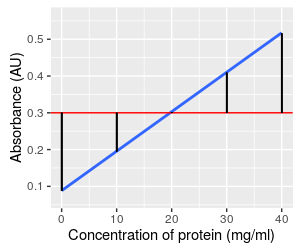
Finally, the way we measure how well the line explains variation in absorbance is by calculating the difference between the predicted values on the line and the grand mean, and then summing those squaring those differences. The black vertical lines are the differences, which are the same for every data data value at the same concentration - so, there are five differences per concentration to add together. This component is called the regression sums of squares, or SSR. It represents the variation in absorbance that is explained by concentration. In reality, since SST = SSR + SSE, once we have calculated SST and SSE it is possible to calculate the regression sums of squares as SSR = SST - SSE. |
Each of these SS have a degrees of freedom associated with them.
- Total d.f. is always the number of data points minus 1. Remember that we have a concentration and an absorbance for each data point, so be sure to count the data points and not the number of measurements. With 5 replicates at each of 5 different concentrations, n = 25, and total d.f. = 25 - 1 = 24.
- The regression d.f. is always equal to 1 in a simple linear regression. We assign one d.f. to the estimate of the slope.
- Error d.f. is just total d.f. - regression d.f., or 24 - 1 = 23.
We now have a SS and a d.f. for total, regression, and error, so we can assemble an ANOVA table.
| Source | DF | SS | MS | F | p |
|---|---|---|---|---|---|
| Regression | 1 | 0.576 | 0.576 | 557.33 | <0.0001 |
| Error | 23 | 0.024 | 0.001 | ||
| Total | 24 | 0.600 |
Recall that mean squares (MS) are SS divided by d.f., and are estimates of variance. The F statistic is a ratio of the two mean squares, MSregression / MSerror. We identify the F distribution to compare the F statistic to using the degrees of freedom - there are 1 numerator and 23 denominator degrees of freedom. The p-value is the area under the F-distribution from 557.33 to infinity - the p-value is tiny, much less than 0.05 (and in fact much less than the 0.0001 value reported here). With this p-value we would reject the null - we can reject the null hypothesis, and conclude the slope of the line is not equal to 0.
The ANOVA table confirms our impression of a strong, non-random relationship between the absorbance and protein concentration. If we were primarily interested in testing the hypothesis of a relationship between absorbance and concentration this may be the most important part of the analysis.
However, when we are developing a standard curve, we are already pretty sure that there is a relationship between the measurement we are making and the concentration of the sample - spectrophotometers cost $1,000 or more, and that's a lot of money to spend on an instrument that might produce random data! The most important part of regression analysis for developing standard curves are a combination of measuring the strength of the relationship between absorbance and concentration, and in using the regression equation to predict concentrations of unknowns.
Interpreting a statistically significant regression
Slope and intercept coefficients
MINITAB provides the regression equation based on the slope and intercept estimated from your data. For the illustrations above, the equation is:
Absorbance = 0.088 + 0.0107 Concentration
The slope is the term that is multiplied by the predictor variable. The sign is meaningful - a positive slope means that an increase in the predictor leads to an increase in the response variable, whereas a negative slope means that an increase in the predictor leads to a decrease in the response variable.
MINITAB doesn't report units, but both coefficients have units. The units of the slope are (y variable units)/(x variable units), so the units of this slope are AU/(mg/ml). The intercept is the absorbance expected when concentration is 0, so the intercept is an absorbance value - its units are AU.
Strength of relationship between predictor and response
| 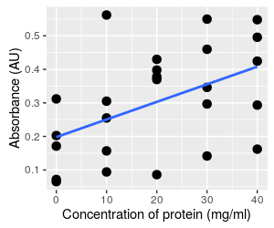
Consider these two different graphs - both use exactly the same absorbance data. The graph on the left is the data set we've been working with, showing a clear relationship between absorbance and concentration. The data on the right has been randomly re-assigned to concentrations, and you can see there is a lot more scatter around the line. Of the two, the graph on the left is clearly a stronger
relationship, but we can quantify the difference with a couple
of additional statistics. |
| Source | DF | SS | MS | F | p |
|---|---|---|---|---|---|
| Regression | 1 | 0.576 | 0.576 | 557.33 | <0.0001 |
| Error | 23 | 0.024 | 0.001 | ||
| Total | 24 | 0.600 |
| Source | DF | SS | MS | F | p |
|---|---|---|---|---|---|
| Regression | 1 | 0.138 | 0.138 | 6.85 | 0.0154 |
| Error | 23 | 0.462 | 0.020 | ||
| Total | 24 | 0.600 |
The table for the stronger relationship is on the left, and you can see that a lot of the total sums of squares is partitioned into the regression term. Compare that to the ANOVA table for the weaker relationship on the right - the absorbance data is the same in both graphs, so the total SS doesn't change, but there is much less of the total SS partitioned into the regression term, and more in the error term. Remember, the error term is random variation, so the weaker relationship has more random variation.
We can measure the proportion of the total SS that is accounted for by the regression line - this statistic is called the coefficient of determination, or r2. The r2 for the first, strong relationship is:
r2 = 0.576/0.600 = 0.96
and for the weaker relationship it is:
r2 = 0.138/0.600 = 0.23
We interpret these numbers as telling us that the regression line for the first data set (graph on the left) explains 96% of the variation in the response, but the regression line for the second data set (graph on the right) only explains 23% of the variation in the response.
A flat line would explain none of the variation in the response, and all of the sums of squares would go to the error term - zero explained variation is the smallest possible amount, which would result in an r2 of 0.
What do you think the coefficient of determination would be if the data points all fell exactly on the regression line? Click here to see if you're right.
Prediction and uncertainty
MINITAB gives us standard errors for each of the coefficients, but we can also estimate confidence intervals along the entire length of the line. To interpret the 95% confidence band, start by selecting a concentration (such as 20 mg/ml), and see what the mean absorbance to be - it is predicted to be 0.303 mg/ml. According to the confidence band at that point, we have 95% certainty that the mean absorbance falls between 0.290 to 0.316 mg/ml. The confidence band pertains to accuracy in the estimate of the mean at any point along the x-axis.
Hopefully you can see that the gray band around the line is narrowest at concentration = 20, because this is the mean concentration. The line has to go through the mean of x and the mean of y, so no matter what the slope value is the line will go through this point, like a seesaw. Uncertainty in the slope causes the line to pivot at this point, and makes the position of the line less certain the further away from the mean you get.
Uncertainty in the intercept results in the line moving up or down along the y-axis (recall this behavior from the graph above), and is thus responsible for the vertical width of the band at concentration of 20. It also adds to the width of the intervals away from the mean, because a change in the intercept moves the pivot point up or down.
When we use a standard curve we want to predict concentrations of single vials of protein based on the line, and as you can see the individual data points routinely fall outside of the confidence interval. The confidence band doesn't address how far individual data points can fall from the line at a given x-value.
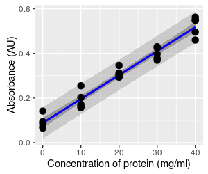This graph shows the prediction limits for this regression, which are the wider, lighter band. The confidence interval band is also shown for reference. The prediction limits are meant to capture 95% of the possible data values that we could observe for this population, given the predicted mean. You can see that the prediction limits band fallows the edge of the data set, and none of the data values in this set falls outside of it (you expect 5% of data values to be outside of it, but since 5% of 25 is 1.25, having all of the data values inside the band is not very different from the expected). Since individual data values are more variable than means, so prediction limits are wider than confidence bands.
The way to interpret the prediction limits is to select a position along the x-axis (such as a concentration of 20), and read the lower and upper vertical limit at that concentration - you'll see that the lower limit is at 0.235, and the upper limit is at 0.370. So, whereas we have 95% certainty that the mean absorbance falls between 0.290 to 0.316 AU at a concentration of 20 mg/ml, we have 95% certainty that readings from individual samples could be as low as 0.235 AU, and as high as 0.370 AU.
Since we want to use this relationship to predict values for single samples, the scatter around the line is what we need to pay attention to. The more scatter around the line, the less precision we will get in our absorbance-based measurements of concentration.
The problems with inverting the equation
But we're not done yet. An r2 of 0.96 would be very
impressive in many circumstances. But, we don't just want to use this
relationship to predict absorbance from concentration, we need to use it
to predict concentration from absorbance. The fitted line has the
equation:
Absorbance = 0.088 + 0.0107 Concentration
Solving for concentration gives us:
Concentration = 93.46 Absorbance - 8.22
| 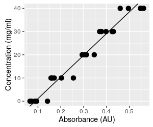
We will now be taking absorbances we read from the spectrophotometer and plugging them in to the equation to predict concentration. The algebra is perfectly straightforward, and it certainly seems like the procedure would work fine. But, predicting the independent variable (concentration) from the dependent variable (absorbance) fundamentally changes what we are doing. The first problem we have to be concerned about is that the choice of dependent and independent variable matters in regression. The analysis assumes that there is only random variation in the dependent variable, and finds slopes and intercepts that minimize the squared residuals around the line. If we make concentration the dependent variable and absorbance the independent, we would find slopes and intercepts that minimize the squared residuals for concentration, rather than the squared residuals for absorbance, and the line will be different. Click on the graph to show both this line and the one we would get if we did a regression using concentration as the dependent variable (response) and absorbance as the independent (predictor). With such a high r2 the lines are not too different, but they aren't identical. Since both lines go through the mean of each variable, both lines predict the same mean concentration at the mean of absorbance, but the lines become increasingly different as you move away from the mean absorbance. The error in your data due to this problem is therefore small at average concentrations, but gets increasingly large at either very high or very low concentrations. |
| 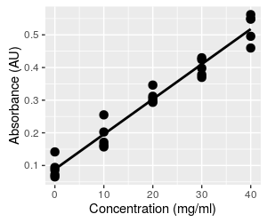
But that's not the end of the problems. The original graph of absorbance vs. concentration with our fitted line is shown again here for reference. This is the way we fitted the line initially - we set the concentrations, measured the absorbances, and fit a regression line that predicts the mean absorbance at each concentration. Because the line predicts mean absorbance at a given concentration, the line runs through the middle of the set of five absorbance measurements at each concentration. When you click on the graph it becomes the graph above that shows the same line, but with absorbance on the x-axis (the independent axis) and concentration on the y-axis (the dependent axis). The regression line no longer runs through the middle of a vertical scatter of data. When we predict a concentration from a measured absorbance, we have no reason to expect the predicted value will be a central, mean value, within the range of the measured data. |
|
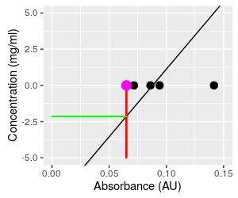A blowup of the graph of the inverted relationship makes this problem easier to see. Predicting concentration from absorbance is done by taking a measured absorbance from the spectrophotometer (say 0.065, the smallest absorbance in the data set, shown as a magenta dot on the graph) and plugging it into the equation for concentration, which gives a concentration of 93.46 (0.065) - 8.22 = -2.14. This is not only a concentration that is lower than the lowest one observed in the data set, it is an impossible value - concentrations can't be negative. To understand what happened, we can look at what this calculation is doing, graphically. This calculation is equivalent to projecting vertically from the x-axis at Absorbance equal to 0.065 to the regression line (where the red line at Absorbance = 0.065 intersects the black regression line), and then projecting horizontally from this point on the regression line to the y-axis, where you can read the predicted concentration (the green line). This puts the predicted value below the lowest observed data value, and into negative territory. Click on the graph to put Absorbance back on the y-axis and Concentration on the x-axis so that they match their roles in the regression as dependent and independent variables, respectively. We now use the known concentration for the magenta dot of 0 to set where we project to the line, and this puts the predicted absorbance into the middle of the observed data. Since the regression line goes through the scatter of absorbances at the mean, the prediction of dependent variable from observed independent values will be in the middle of the range of our actual measurements of the dependent variable. When we invert the relationship without fitting a new regression line, we no longer have any reason to expect the predicted values will be average concentrations at the observed absorbance - we can get values that are outside of the data values observed. |
Before this makes you skeptical of standard curves, you should know that our r2 of 0.96 is actually terrible for a standard curve. Typically we would only accept standard curves with a very high r2, the closer to 1 the better, but never lower than about 0.98. If the points are sufficiently close to the line this problem of inverting the relationship stops being a major source of error, and it's safe to ignore. But, even a regression line with a seemingly high r2 of 0.96 is too low to be reliable as a standard curve.
Assumptions of a regression analysis
For regression, the equivalent to the HOV assumption is that the residuals around the regression line are normally distributed, with the same amount of variability along the length of the regression line. This means that 95% of points should fall within 2 standard deviations of the line, that the same standard deviation applies at any point along the line, and that the residuals will fall symmetrically above and below the line.
We also assume that there is a straight-line relationship between the variables across the range of the x data. We are using a straight line as a model of how the dependent variable is affected by the independent variable, and we can only expect regression to help us understand our data if a straight line is an accurate model for our data. To meet this assumption we expect that the regression line accurately predicts the mean of the dependent variable everywhere along the line. When we plot the data, the line should go through the middle of the data cloud.
Extrapolation and interpolation
This raises a related point - we can't know that a relationship is linear beyond the range of the observed data, so it is generally a bad idea to use a regression equation to predict values that are outside of the observed x-data range. Predicting values beyond the range of observed data is called extrapolation, and should be avoided.
If you look at the graphs of our example data you'll see that the concentrations are spaced 10 mg/ml apart. It is not a stretch to assume that the the line is straight in between these concentrations at which we have measured data, so predicting an absorbance at 15 mg/ml, or any other value in between the observed data, is generally safe. This is called interpolation, and interpolating usually gives reliable results.
Checking assumptions
If our distributional assumptions aren't true we will be able to see it in the distribution of the residuals around the line. Because of this, we can assess whether we're meeting our assumptions graphically by plotting the residuals in a few informative ways.
| 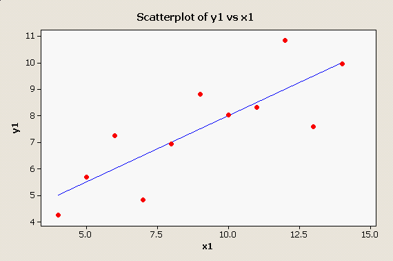
MINITAB provides a good set of graphical methods to detect violations of these assumptions, not the least of which is a simple scatter plot with the regression line plotted through it: There is no apparent problem with this data set - the points appear to be randomly distributed around the line, and the pattern looks linear. |
| |
| 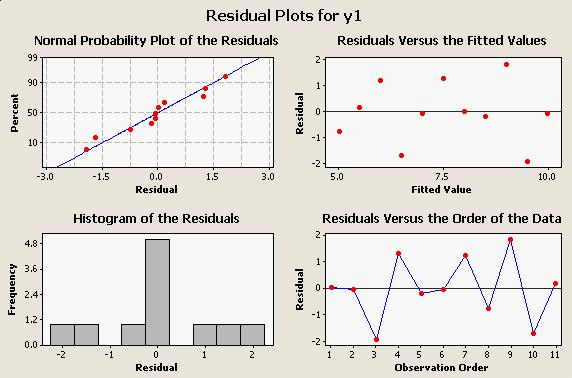
When we run the regression, we can ask for residual plots that will help us spot problems, and the residual plots for this data looks like this: All four of these graphs are useful for looking for different kind of problems:
|
The MINITAB regression output for this data set is:
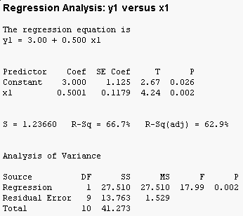
You can see that the overall F test is significant (the "Analysis of Variance" table at the bottom has a p-value less than 0.05), and that both the intercept (called the "Constant" by MINITAB) and the slope (x1) are significant as well. Furthermore, 66.7% of the variation in y1 is accounted for by x1.
Diagnostic plots - look at them!
| 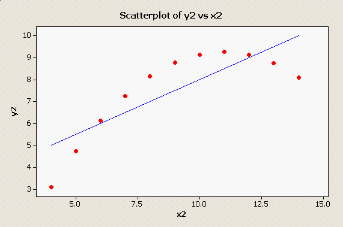
Scatter plots and residual plots are very important parts of regression analysis that should not be skipped in a rush to get to the numerical output. For example, consider this plot: Obviously the straight line is not doing a good job of representing this strongly curvilinear relationship between x2 and y2, and this simple scatter plot makes the problem perfectly obvious. |
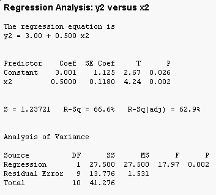But, the tabular output for this clearly non-linear relationship doesn't show any sign of trouble - in fact, if you compare this output to the output for x1 and y1 they are nearly identical.
| 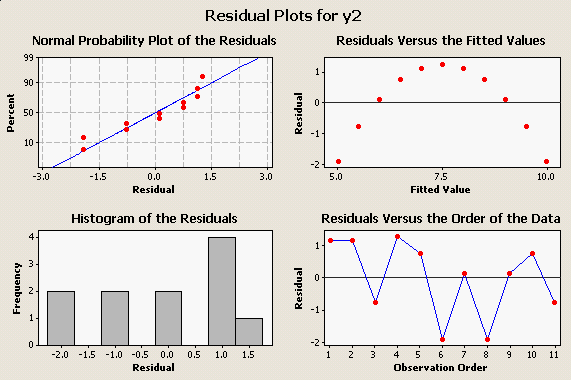
Like the scatter plot of the data does, the plot of residuals vs. fitted values makes the poor fit obvious: You can see, too, that our assumption of normally distributed residuals encompasses our assumption of a straight-line relationship - the residuals won't be normally distributed around the regression line unless the real relationship between the variables is a straight line. |
| 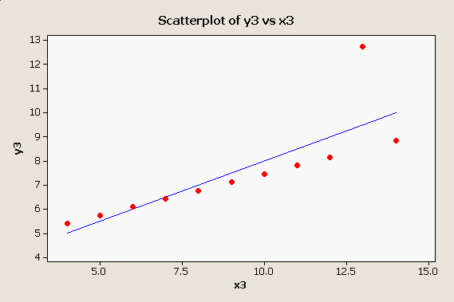
Here is one more oddball data set that produces the same numerical results as the first two: |
| 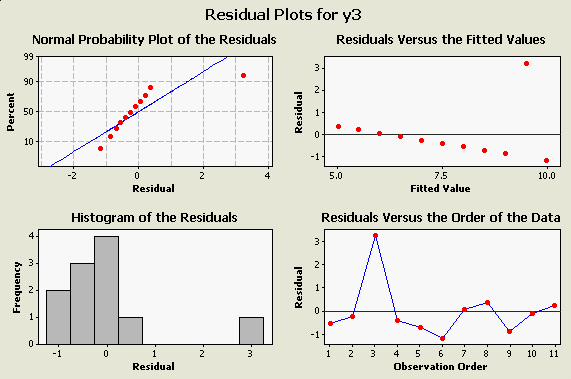
Here we have a nearly perfect straight line relationship with a single "outlier" that is dragging the regression line up. Here are the residual plots: |
| 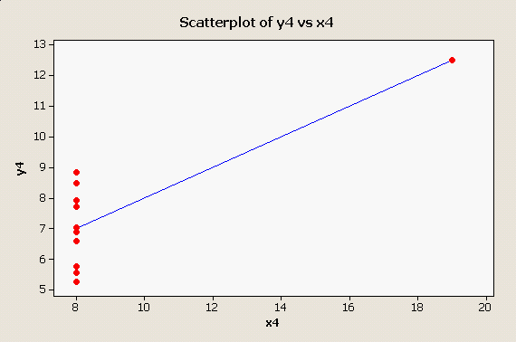
And, one final one, in which there is a single outlier along the x-axis: |
| 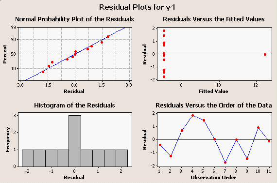
and its residual plots: |
The take-home message is, Look At Your Data! Big, embarrassing mistakes can be avoided with these very simple plots and graphical diagnostics.
Next activity
This week we will see how performance on an eye test (the dependent
variable) is affected by distance from the chart (the independent
variable), and test the relationship using regression analysis. We will
also test the significance of correlations between body dimension
measurements we made in previous activities.